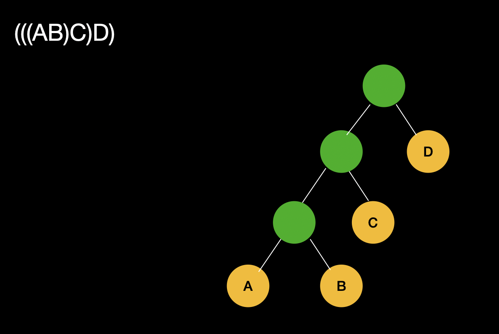
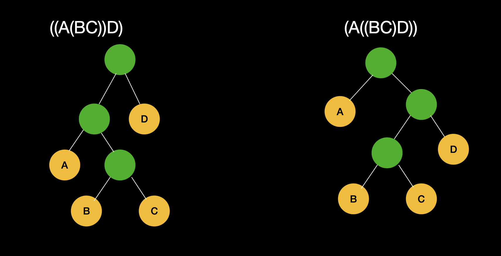

Chain Matrix Multiplication
-
Problem
This problem deals with deciding a sequence of matrices so that the cost of matrix multiplication is least. In other words, the problem is not actually to perform the multiplications but only to decide the sequence of matrix multiplications involved. -
How does the sequence of matrices matter?
Let `X` be a `m*a` matrix and `Y` be a `a*b` matrix . Then the cost to perform `XY` will be `m*a*b`.
Matrix multiplication is associative which means `((AB)C)D = ((A(BC))D) = (AB)(CD) = A((BC)D) = A(B(CD))`. Now, let us look at how different sequence affects the cost of matrix multiplication.
Example : if A is a 10 × 30 matrix, B is a 30 × 5 matrix, and C is a 5 × 60 matrix, then computing (AB)C needs (10×30×5) + (10×5×60) = 1500 + 3000 = 4500 operations while computing A(BC) needs (30×5×60) + (10×30×60) = 9000 + 18000 = 27000 operations. Clearly, the first method is more efficient. -
Solution
With a clever observation , we can see that these sequences form a binary tree Consider multiplication (ABCD)-
Case ((AB)C)D :
Here A and B are multiplied to give a resultant matrix say X which is then multiplied with C to give an intermediate matrix say Y . This Y will finally be multiplied with D to give final result
Consider A and B to be leaf nodes connected to parent X . Then X and leaf node C are attached to parent Y . At this stage, Y and D are attached to parent node final result. Similarly binary trees can be formed in (A(BC)D) and (A(BC))D.
- Similarly binary trees can be formed in (A(BC)D) and (A(BC))D.

 -
Case ((AB)C)D :
-
Observe that, for a binary tree to be optimal, its subtrees must be optimal!
In order to give a correct output , we need to look at all possible binary tress i.e we need to look at all possible sequences.Separate a sequence of matrices into two subsequences . Then, find the minimum number of simple multiplication operations performed to find the result of both subsequences. Add these costs as well as the cost of multiplying the two result matrices . Do this for every pair of subsequences and output the minimum result.
- Using the above approach, If `C(i,j)` is the minimum cost to multiply matrices in subsequence from `i` to `j`. Then `C(i,j) = min(C(i,k)+C(k+1,j)+m_(i-1)*m_k*m_j)` for all `k >=i and k < j`
for i=1 to n: C(i,i)=0
for s=1 to n-1:
for i=1 to n-s:
j=i+s
C(i,j) = min(C(i,k)+C(k+1,j)+m(i-1)*mk*mj)
return C(1,n)